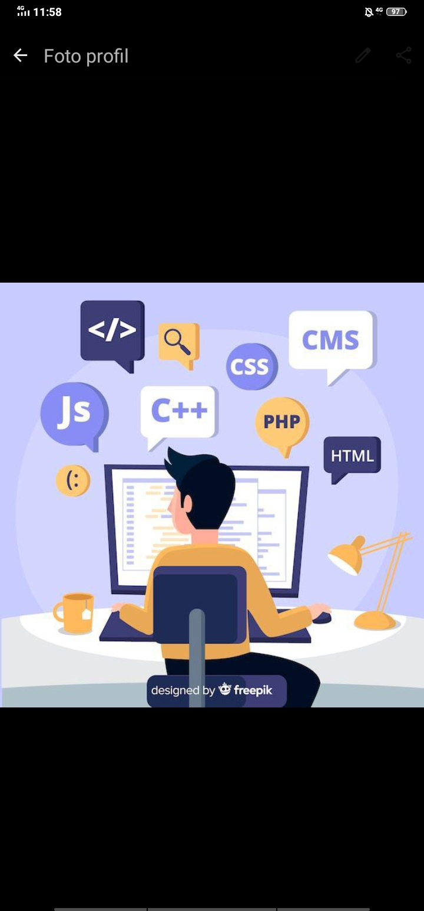

Pondok Pesantren Shadiqul Amin | Jurusan Ilmu Teknologi
Perkenalkan nama saya Zaid Alvan, santri Pondok Pesantren Shadiqul Amin. Saya mengambil jurusan Ilmu Teknologi dengan fokus di bidang konstruksi bangunan dan pengembangan aplikasi.
Bagi saya, seorang santri harus bisa membangun peradaban, baik lewat batu & semen, maupun lewat baris kode untuk kemaslahatan umat.
Sedang mendalami: Manajemen Proyek, UI/UX Design, Kotlin
Visi: Menjadi santri technopreneur yang membangun infrastruktur fisik dan digital berbasis nilai Islam.
Misi:
Terbuka untuk diskusi project bangunan, kolaborasi bikin aplikasi, atau ngobrol soal teknologi:
Chat WhatsApp Saya